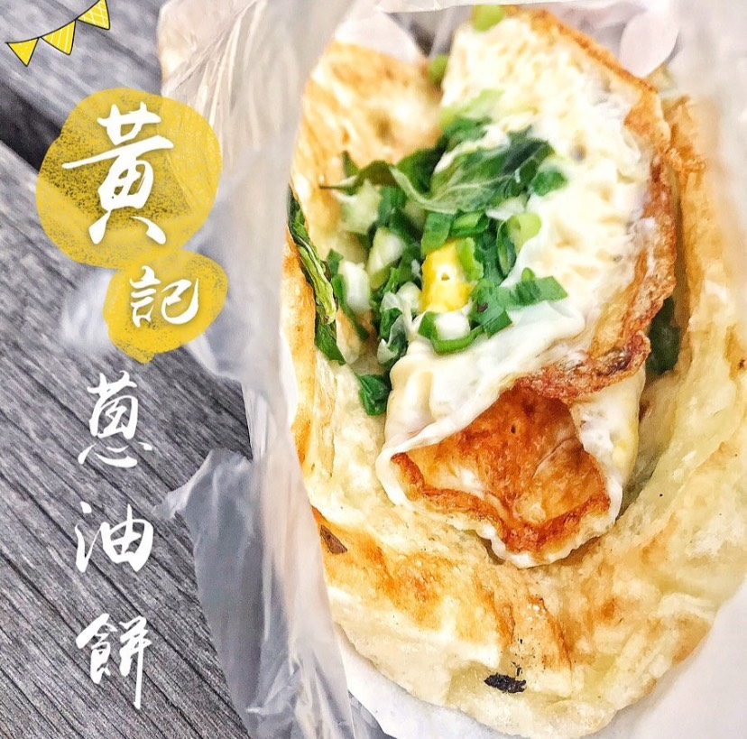
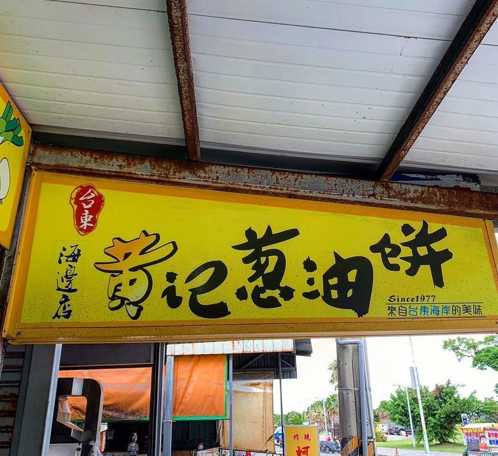
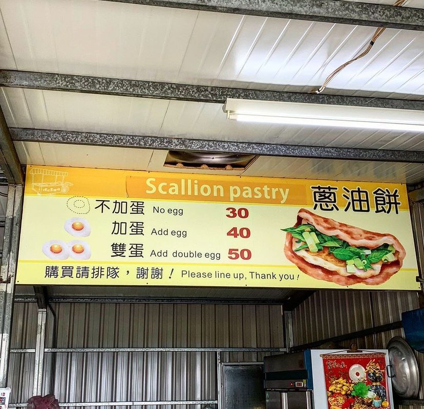
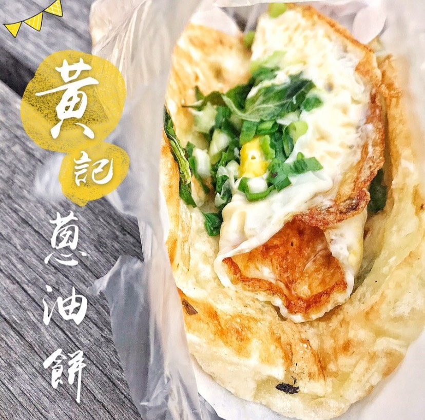
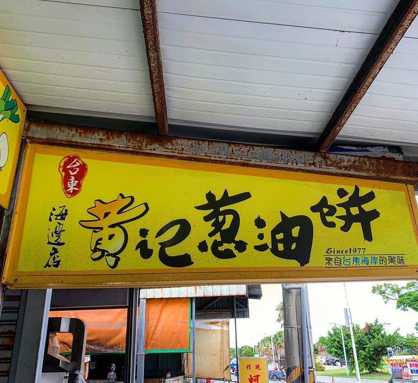
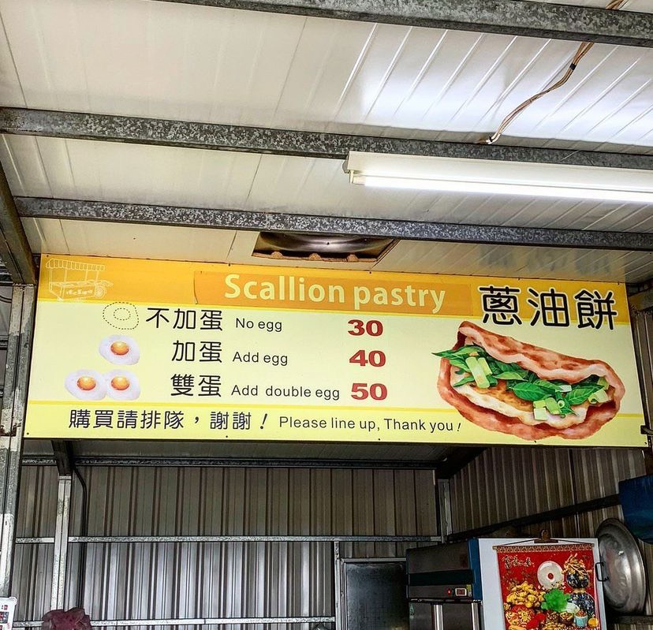

黃記蔥油餅
售價：
- 不加蛋：３０元
- 加蛋：４０元
- 雙蛋：５０元
時間：
- １４：００～１８：００
電話：
- (08)922-2175
地址：
- 台東縣台東市南海路36號
內文：
來台東必吃的『黃記蔥油餅』， 生意好到店員的手從來沒停過！
麵皮都是現揉的，吃起來很Q很有口感，最特別的是加了許多九層塔和青蔥,還有半熟的荷包蛋，再刷上特製醬油和辣醬，吃起來特別香！
坐在對街石椅上，搭配著海濱公園的海景，更是一大享受。
  來台東必吃的『黃記蔥油餅』， 生意好到店員的手從來沒停過！
麵皮都是現揉的，吃起來很Q很有口感，最特別的是加了許多九層塔和青蔥,還有半熟的荷包蛋，再刷上特製醬油和辣醬，吃起來特別香！
坐在對街石椅上，搭配著海濱公園的海景，更是一大享受。
  